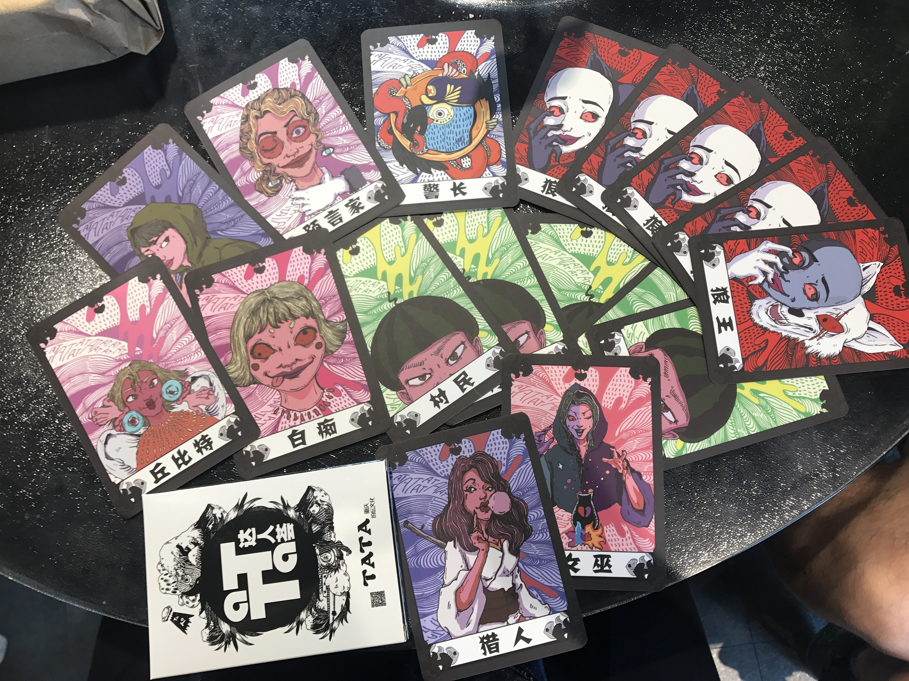
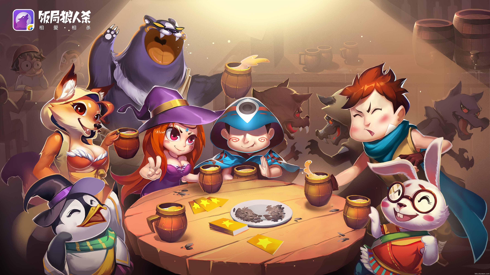
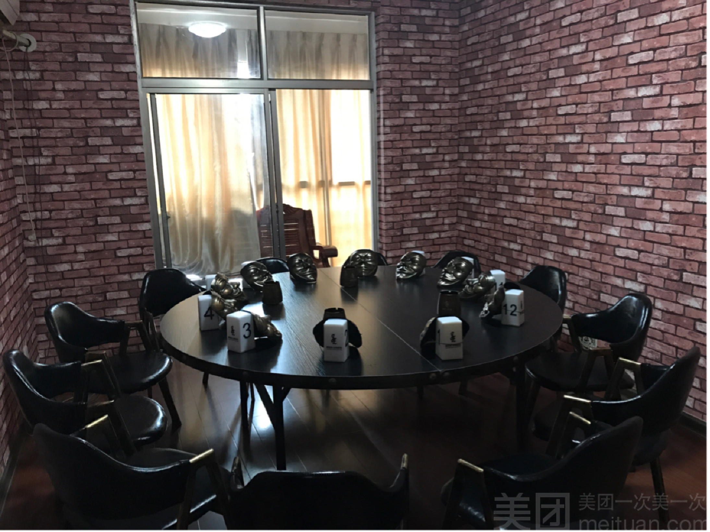
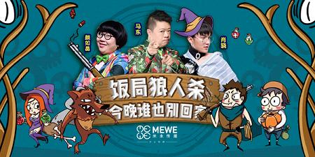

-
- 
- 
-
关于狼人杀
狼人，是一种传说中的生物，据闻这种生物每逢月圆之夜，就会从人身变为狼身。转变为狼身的人狼由于不能控制自身的兽性，而会袭击周边的家畜或人类。狼人和吸血鬼一样，亦属于不朽世界的生物。（不同地方名称会有不同，如法国的热沃丹怪兽及美国的布雷路之兽。） 在中世纪的欧洲，狼人是邪恶的象征，是与魔鬼达成协议的人。在那个年代一时间涌现了很多关于狼人的传说和文学作品。这些都深深地影响了后世各种文学、影视、游戏等的创作。“狼人游戏”便是其中之一。 1986年的春天，苏联莫斯科大学心理学系的迪米特里·达维多夫发明一种游戏，名叫：杀人游戏。在最开始，游戏只在校园内流传。玩家们在莫斯科大学的教室、寝室等处玩此游戏。而到了1990年代初期，该游戏开始逐渐在俄罗斯其他学校流行起来，并跨过国界，传播到了欧洲各国（匈牙利、波兰、英国、挪威等），随后传到了美国，如今该游戏已经遍及世界各地。它被认为是1800年以来五十种最具历史和文化意义的游戏之一。台湾也在1990年代后期已相当流行杀人游戏，而至于该游戏传入中国大陆的具体时间，尚不十分确定。 1997年，安德鲁·普洛特金（生于1970年5月15日，也被称为ZARF，现代互动小说社区的中心人物），在当年的全国谜题联赛大会上学习到了杀人游戏。而后灵感于狼人的传说，他将游戏改成了狼人游戏。于是第一版狼人游戏诞生。 狼人游戏属于“杀人游戏”的一个变种，在原本杀人游戏的基础上引用了狼人的传说，增加了许多角色，赋予了更多的娱乐性。在游戏里，一部分人扮演好人，而另一部分则扮演狼人，他们分别使用技能、言语等进行PK以达到将对方消灭（淘汰出局）的目的。 目前流传最为广泛的一个版本——“狼人杀”，最初是在2001年发布的，原名为：The Werewolves of Miller's Hollow。如今狼人杀已经出了三版：基本版、新月版和村庄版。其为广大的玩家带来了无限的乐趣，深受玩家喜爱。Andrew Plotkin在97年给这款游戏赋予了新的主题，杀人游戏并不是一个依赖文化背景的游戏，而是一个关于敌人如何在夜晚隐藏自己，在白天又要隐藏自己身份的游戏。这款角色扮演类游戏被应用于视觉心理诊断，并用于训练学生阅读身体语言和非语言信号。在98年被引入普林斯顿大学研究生学院，并且从此发展出此款游戏的其他版本。游戏发明者大卫杜夫（Davidoff）有25年的发展心理学（儿童心理学）的教学经验，他发表了一个报告表明这个游戏可以教会儿童如何从错误中分辨出哪些是正确的（"teach kids to distinguish right from wrong"）。 这款游戏还有学术研究价值：A mathematical model of the Mafia game，Mafia : A Theoretical Study Of Players and Coalitions in a Partial Information Environment等多篇文章对此游戏进行了数学分析和理论分析 https://arxiv.org/abs/1009.1031 http://cds.cern.ch/record/984629 这款游戏被评为前50最具历史意义和文化影响力的游戏之一，如今这款游戏已风靡全世界。狼人杀 前身为杀人游戏 1989年源自于俄罗斯的一个大学校园 后引入美国结合狼人传说的故事背景改造成一个名叫werewolf的杀人游戏 2010年由唐立军引进中国大陆并进行改造 取名狼人杀 目前世界各地都有狼人杀不同的玩法 日版狼人杀更多使用屠城规则 国版狼人杀则使用的是更加烧脑的屠边规则 而美国版的规则较为简单 娱乐性强 狼人杀的前身是杀人游戏（警察，杀手，平民） 被警察查出的好人叫做金（谐音警）水，即被警察验出的水民 后来这类术语被沿用至狼人杀中 还派生出各种衍生词 比如 银水（被女巫救起来的水民）， 退水（退身份认水民）等。1 2 3 末页 -
线上狼人杀
狼人杀有线上和线下之分，就是业内人士常说的面杀和网杀，今年网杀越来越流行；所以 近两年狼人杀在手游端爆红，市面上出现了40多款狼人杀APP，下伙伴要如何去选择。今天小编给大家介绍几款市面上最常见的狼人杀，他们各有千秋，小伙伴请自行入坑。一、天天狼人杀:一边杀人，一边跳舞，反正JY入了股 优点:人多，能偶遇主播大神，可以露脸，视频里有常有好看的妹子 缺点:对网速要求高，板子怪，人民币玩家可以抢身份，狼人夜间不能语音交流，只能靠手势 特点:才艺表演区、相亲区
二、狼人杀:《lyingman》金主，人多钱多规矩多 优点:人多，板子多且均衡，休闲性强，玩家自觉性高，狼人夜间可语音交流战术 缺点:可以插麦，可以插麦，可以插麦 特点:有排位模式
三、网 易狼人杀:后起之秀，各方面均衡设计优良的APP 优点:板子多且均衡，接近面杀规则，狼人夜间可语音交流战术 缺点:没有复盘记录，板子限号搞饥饿营销 特点:可观战好友，可直接观战熊猫TV主播
四、饭局狼人杀:让狼人杀走进了大众视野 优点:狼人夜间可语音交流战术，有种狼、动物局等特别板子，可观战 缺点:进阶板子少 特点:线下聚会可以当辅助工具，死人可以观战交流线上狼人杀开启了交友新方式，打破了之前玩狼人杀却找不齐人的尴尬，不管是老玩家还是新玩家都能在其中找到乐趣。
各位玩家,天黑请闭眼！饭局狼人杀图册 -
线下狼人杀
现下狼人杀也就是面杀是我个人比较喜欢玩的模式，他其中的乐趣在于面对面，对于那些性格比较内向的朋友来说，线下的这类游戏有利于培养性格，且有利于交朋友；
在很大的社会压力下，上班族想凑齐十几个人在一起玩狼人杀是很困难的一件事情，虽然是个能全名参与且好玩的游戏，但是确实没有时间，或者说没有这么多朋友同时有时间来聚在一起玩，一般只有学生会有； 所以目前市面上很火爆的狼人杀俱乐部就横空出世；
狼人杀俱乐部类似于酒吧KTV夜总会这样的场所，主要用于休闲娱乐，是目前社会上比较流行的一种主题俱乐部。一般狼人杀俱乐部的营业模式是：你给一定的钱，然后你就能在这里呆一定的时间，在这段时间里，俱乐部的工作人员 会安排你跟一些你以前可能不认识的人一起玩狼人杀；在这期间你也可以在饮品或小食上消费，这就是狼人杀俱乐部的营业模式，这也是现在线下狼人杀的主流方式，在你上班或者上学累了的时候，可以去玩一玩，当然必须在你消费能力范围之内；
说起狼人杀俱乐部不得不说咋们狼人杀粉丝一定知道的一位高玩：国服第一狼人JY。JY原名戴仕，以前是一位英雄联盟主播，在狼人杀活了之后，由于他逻辑性强；泯身份能力强，在业内爆红，后来更是开了一家有一家狼人杀俱乐部，名为JYCLUB， 好的环境加上里面你的名人比较多，是的JYCLUB在业内很受欢迎；- 

-
饭局狼人杀
饭局狼人杀是以马东为主持人的一款集综艺和脱口秀为一体的，一款别具一格的综艺节目，在以狼人杀为基础游戏的前提下，加了很多搞笑元素，让狼人杀展现出欢乐的一面，不再是压抑的气氛，当然每一期都会邀请不同的明星嘉宾参与游戏中，让节目更具看点，10位能言善辩的艺人“杀场过招”，紧张刺激的游戏加上幽默的几位主持人加嘉宾，让这款综艺十分火爆。
《饭局狼人杀》节目，创作灵感来源于时下流行的多人互动推理竞技游戏——狼人杀。作为其“姊妹”节目，即将直播上线。节目以“狼人杀”和米未的优势特色：脱口秀为节目基石， 10位能言善辩的艺人“杀场过招”，在真假难辨的狼人游戏中剥出谎言，找出真相，用智商燃烧卡路里。
一款后来居上的同名狼人杀手游：饭局狼人杀目前也是非常火爆
综艺观看地址为腾旭视频，当然也可在芒果TV，爱奇艺，PP视频等同步观看。饭局狼人杀_综艺最新_腾讯视频在线观看
2017|内地|暂无
最新一期
主持人：马东
简介：节目以“狼人杀”和米未的优势特色：脱口秀为节目基石，
10位能言善辩的艺人“杀场过招”，在真假难辨的狼人...- 来源:
- 腾讯